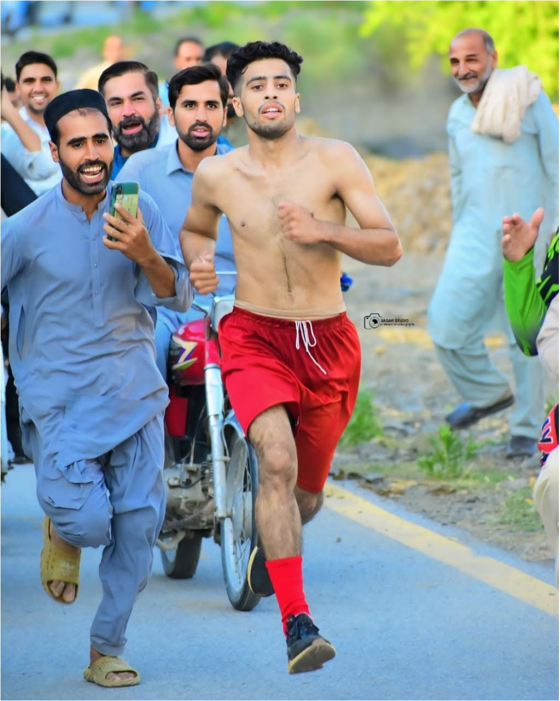
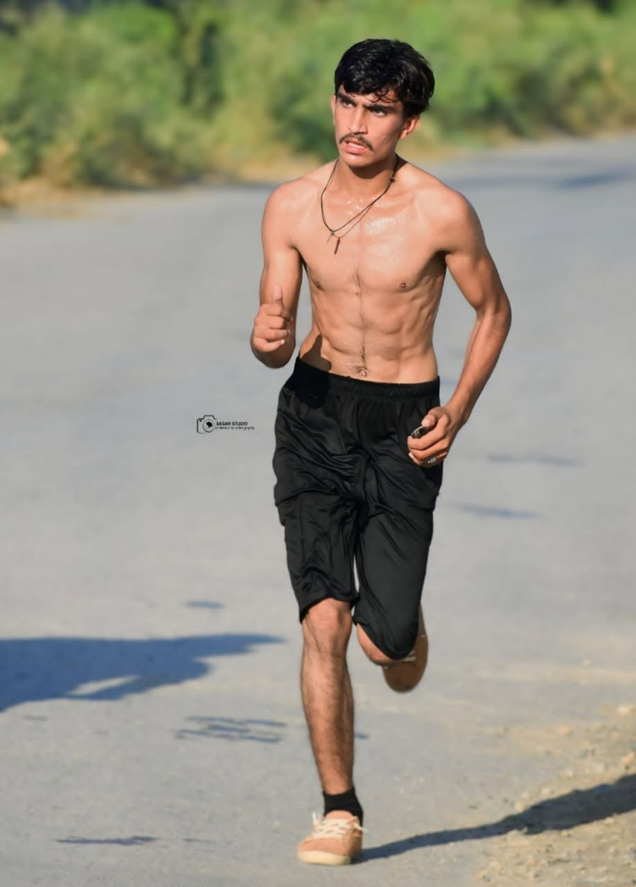
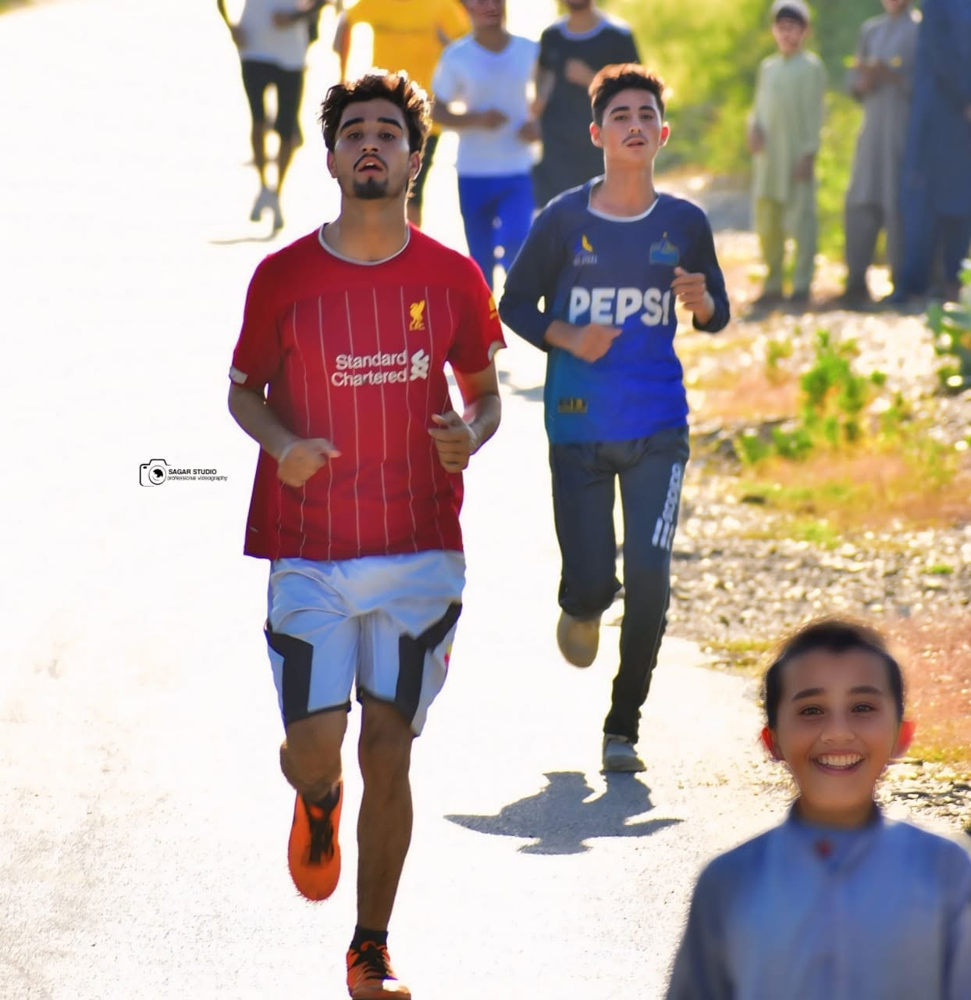

OFFICIAL RACE WEBSITE SEASON 03
One community.
One starting line.
Khawrai Marathon Race Season Three has a new date. The race will be held on Friday, 04 December 2026 at 04:00 PM (PKT) at the same venue in Khawrai, Tehsil Jehangira. Online registration is closed and every registered runner keeps their entry.
RACE DAY · SAME VENUEFriday, 04 December 2026 · 04:00 PM
--DAYS--HRS--MIN--SECIt is race dayRace held · see results

04 · 12 · 2026 · 04:00 PM
KRun with purpose.Celebrate every runner. Honour every finish.
KHAWRAI MARATHON · SEASON THREE
03 SEASONS OF COMMUNITYKHAWRAI · KHYBER PAKHTUNKHWAEST. THROUGH COMMUNITY SPORT
RACE INFORMATION
The race, at a glance.
The race has been rescheduled to a new date at the same venue. The route, start point and finish point are unchanged.
UPDATES & NOTICES
Latest from the organisers.
Official announcements for Season Three. Earlier notices, including the 13 November postponement notice, are kept on the updates page.
THE PODIUMRun for the moment.
Run for the moment.
Earn the honour.
Recognising the top three finishers with prize money and a trophy. Official places are published on the live results page.
View live standingsFIRST PLACE
Champion
Rs. 15,000
Winning Trophy
Gold podiumSECOND PLACE
Runner-up
Rs. 10,000
Trophy
Silver podiumTHIRD PLACE
Third place
Rs. 5,000
Trophy
Bronze podium

THREE
MORE THAN A RACEA local tradition.
Discover the story of KMR-S3
A local tradition.
A shared future.
Khawrai Marathon Race grows from the energy of its runners and the support of the community. Season Three carries that spirit forward with a wider invitation, transparent public updates and an official results experience.
01
Sport for everyoneCelebrate commitment, training and participation.
02
Transparent updatesUse official pages for runner information and results.
03
Community prideBring people together through a shared sporting event.
FOLLOW THE JOURNEYEvery runner has a story.
Every runner has a story.
Follow race day with us.
Race day is Friday, 04 December 2026 at 04:00 PM. Review the event guide and follow live results as the race happens.